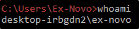

User Enumeration
We have a lot of commands to check the users and groups on the system.
Better start with whoami:

We can check for our privileges addming /priv:

Or, we can search for groups we belong adding /groups:
We can check if we belong to some kind of administrative group

We can look for users in the machine:
It can be good to know for, as example, to migrate with meterpreter lateraly,

If we want to know more about an user, we can use net users USERNAME:
If we need to escalate, better target an user that is in some administrator groups

We can check for localgroups:

Or, for a single one: even if net localgroup give us an error message,
if we know the exact name of the group, we can still access it!!!